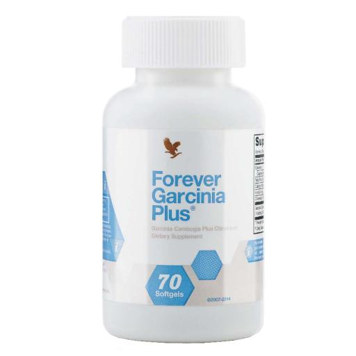

مصمم لمساعدتك في الحصول على أفضل النتائج
تم تصميم فوريفر جارسينيا بلس® ليكمل نمط حياتك الصحي ويساعدك على تحقيق أهدافك في إدارة الوزن. تحتوي فاكهة الجارسينيا كامبوغيا، على حمض هيدروكسي ستريك (HCA)، وقد ثبت أن هذا المركب يمنع بشكل مؤقت قيام الجسم بتحويل الكربوهيدرات إلى دهون. يحتوي مستخلص الجارسينيا المستخدم في فوريفر جارسينيا بلس® على مستويات عالية من هذا المركب الهام.
لأن يساعد الجارسينيا على منع إنتاج الدهون، يقوم الجسم بحرق مخازن الدهون الموجودة، مما يساعد في فقدان الوزن عند دمجها مع نظام غذائي صحي و تمرين رياضية. وقد ثبت أيضًا أن هذه الفاكهة المذهلة تساعد في تقليل الشهية.
اكتشف الباحثون في الستينيات أن فاكهة الجارسينيا تحتوي على مركبات يمكن أن تؤثر على التمثيل الغذائي عن طريق تثبيط الإنزيم الذي يحول السعرات الحرارية إلى دهون. فوريفر جارسينيا بلس® خالي من الكافيين، لذا يمكنك تناول هذا المكمل بدون اهتياج الكافيين.
لتكملة الجارسينيا، أضفنا بيكولينات الكروم. إذا كان جسمك يعاني من نقص في هذا المعدن، فقد يسبب التعب والإفراط في إنتاج الدهون. أنت تعمل بجد للأكل الصحيح وممارسة الرياضة و فوريفر جارسينيا بلس® أداة رائعة لمساعدتك على البقاء على المسار الصحيح.